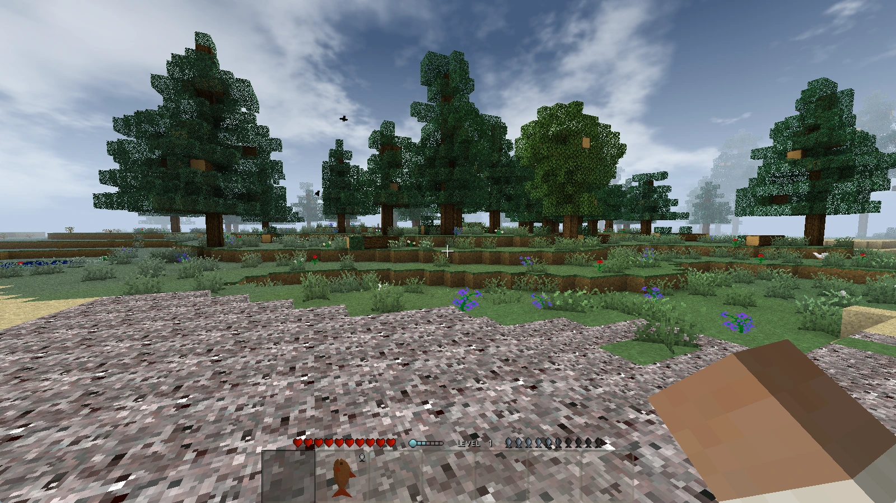
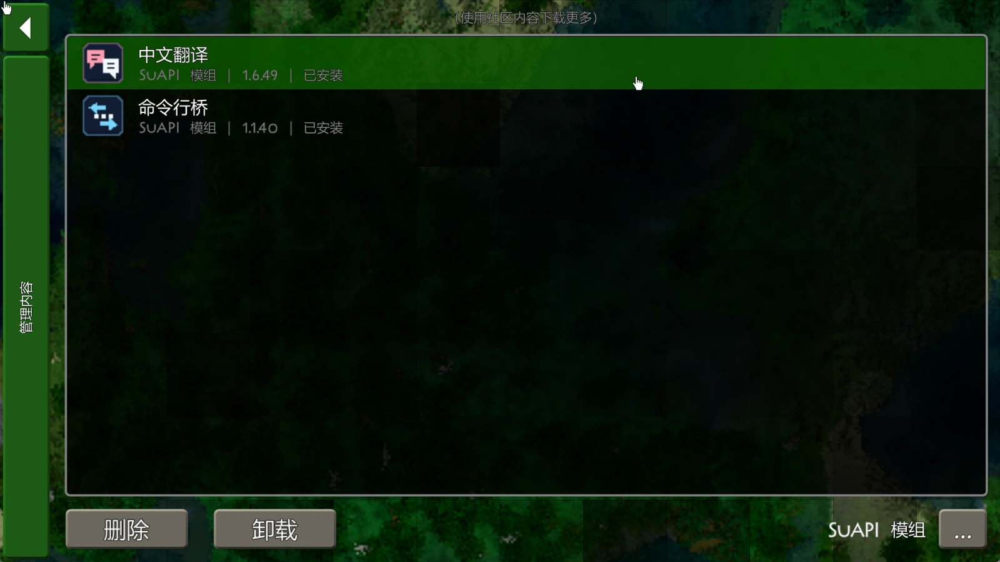
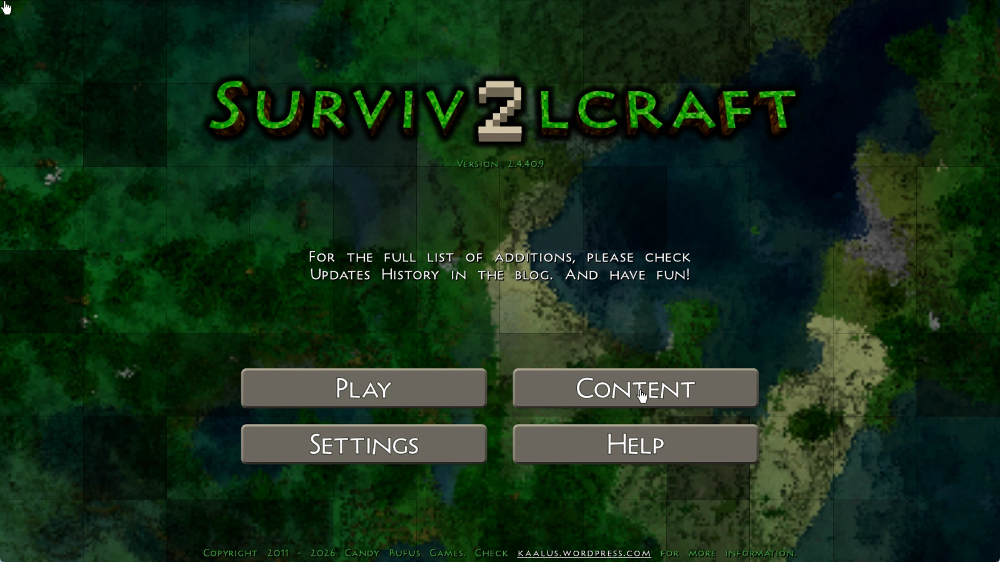
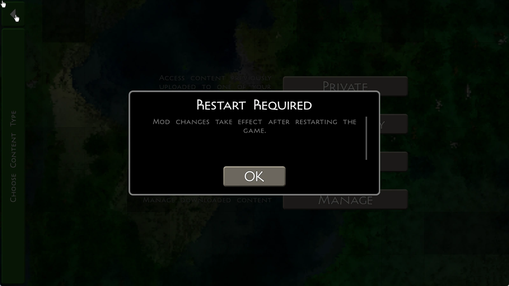

Windows
64-bit · Portable
ZIP · 61.1 MBGame 2.4.40.9
Download for Windows
Installation steps

Download the game for your device. It starts in English; follow the illustrated guide below to add the Chinese translation.

Without mods, the game plays just like the original.

Install the mod to display menus and in-game text in Chinese.

Open Content → Community → MOD to find and download mods.

Select a mod in Content → Manage to install or uninstall it.

Install SuMultiplayer to find and join rooms from the world selection screen.
64-bit · Portable
ARM64 · Phones / tablets
64-bit · Desktop
.zip file and select Extract All.[SuAPI]Survivalcraft folder and double-click Survivalcraft.exe..Apk file from your browser's downloads or a file manager..tar.gz archive to a writable directory.[SuAPI]Survivalcraft folder and run ./Survivalcraft.su-zh
Install it directly in the game. Click any screenshot to enlarge it.

On the English main menu shown at first launch, select Content.

Select Community on the Content screen to open the community selection dialog.

Choose MOD and select OK to open the mod list.
Search for su-zh, select 中文翻译 (Chinese translation), then select Download. The mod installs automatically after downloading.

When Download Successful appears, select OK. Use the top-left arrow to leave the mod list, then go back from the management screen. When Restart Required appears, select OK.
After restarting, the Content screen is in Chinese. Use the top-left arrow to return to the Chinese main menu.